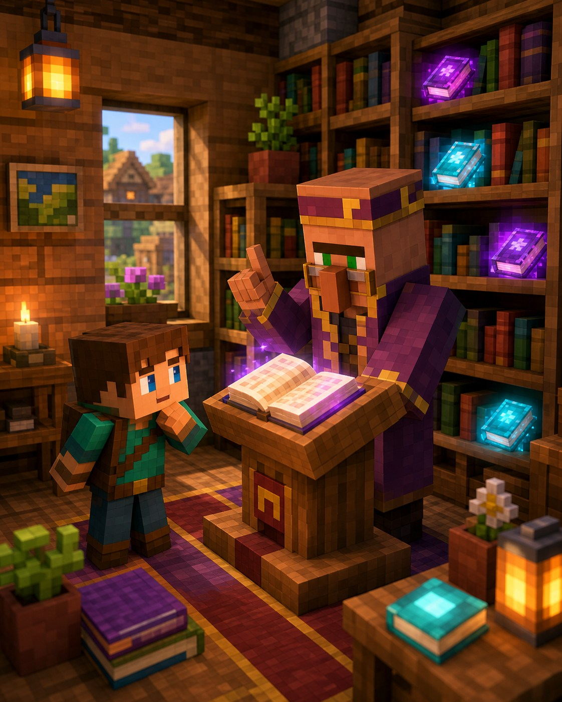

Рідкісне відкриття
Жителі знають секрети
Книги можуть
давати
чари.
Бібліотекар торгує корисними книжками. Потім ковадло перенесе їхні чари на твою річ.

Навіщо це потрібно?
Чари з книжки можна зберегти до потрібного моменту. Це зручно, коли ти ще не зробив ідеальну кирку, меч або броню.
Три прості дії
Як знайти бібліотекаря
1Постав кафедруЦе робочий блок бібліотекаря+
Постав кафедру поруч із безробітним дорослим жителем. Він одягне окуляри й стане бібліотекарем.
2Перевір перші пропозиціїКнижка зазвичай коштує смарагди й книжку+
Відкрий меню й подивись, які книжки є. До першого обміну можна змінити пропозиції, прибравши й повернувши кафедру.
3Перенеси чари ковадломРіч ліворуч, книжка праворуч+
Коли матимеш потрібну книжку, використай ковадло. За це потрібні рівні досвіду.
Книжка: як це виглядає
з чарами
чарами
● Книга витрачається, коли ти забираєш готову річ із ковадла.
Підказка мандрівникові
Важливо знати
Книжку можна відкласти
Не треба одразу витрачати її на першу-ліпшу річ.
Не всі чари сумісні
Ковадло не дозволить поєднати конфліктні чари.
Перший обмін закріплює пропозиції
Спочатку обери книжку, а вже потім торгуй.
Маленьке завдання
Спробуй за 5 хвилин
- Знайди безробітного жителя.
- Постав біля нього кафедру.
- Відкрий меню й пошукай книжку з чарами.
★ Бонус: збережи першу хорошу книгу в окремій скрині.